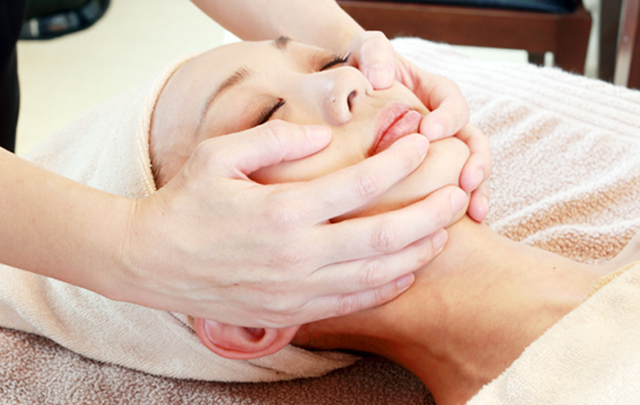
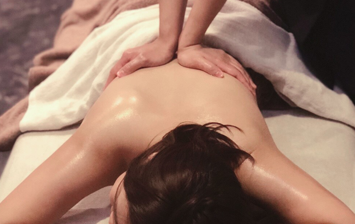
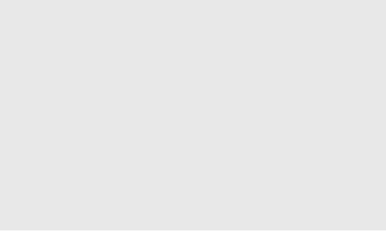
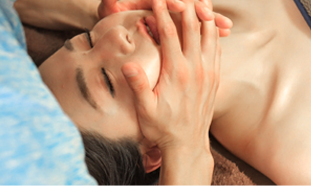
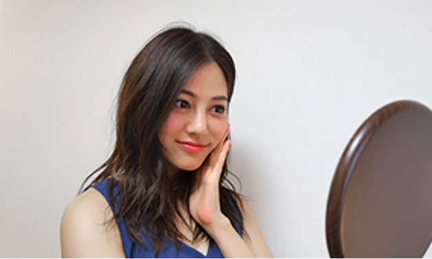

KORUGI
フェイスラインをシャープにしたい、リフトアップしたい方へ。
彫刻骨気（コルギ）は顔の骨と筋肉を同時にトリートメントしていきます。

彫刻のようにメリハリのある整ったお顔に…
マッサージとは違って外側から筋肉と骨を刺激することができるのでフェイスラインがスッキリとし、お顔の筋トレ効果、リフトアップに効果大です。
痛気持ちさがどんどん気持ち良さに変わっていくのは、滞ってたリンパや血液の流れが良くなっていく証拠です。それにより美白、美肌効果も感じていただけます。
ご自分で感じられる見た目の効果が絶大なので、施術が毎回楽しくなります。詰まりすぎている方は最初は涙がにじむくらい痛かったのに、3回目、4回目のごとに、爆睡してしまうほどの気持ちよさになります。
施術を受けたあとは、かなりの確率で周りの人に「痩せた？？」と言われるとの声を多くいただきます。
彫刻コルギエステボンキゴン法とは？

七つのアプローチを一つのテクニックとして完成させたのもの。人体解剖学と生理学を基に、「骨」、「筋」、「気」、「脳」、「精神」の五つに働きかける“静める静”と“刺激の動”のボンキゴンセラピー。
以下の７つのアプローチにて完成したテクニックです。
（１）経絡（ギョンラク）＝経絡の原理に沿った
（２）筋技（グンギ）＝筋層や凝りへ
（３）骨技（コルギ）＝骨を捉えて
（４）気功（キゴン）＝気を通してじんわりと
（５）経穴（マルマアスティ）＝ツボとエネルギーラインへ
（６）緩和（タッチセラピー）＝優しく穏やかなタッチで
（７）施術者（セラピスト）＝セラピストの技術で
- 彫刻コルギエステの効果
-
- ・ストレスを和らげる
- ・免疫機能を向上させる
- ・関節の可動性を改善する
- ・筋肉の緊張を和らげる
- ・精神と脳の働きを向上させる
- ・睡眠の質を向上させる
- ・リンパ線の流れを促進する
- ・筋肉痛を緩和させる
- ・軟部組織傷害の治癒力を高める
- ・関節の巡りを改善させる
-
骨気（コルギ）で期待できること
肌のトーンアップ・リフトアップ・フェイスラインをシャープに
-
骨気の施術の流れ
-
- 1.カウンセリング
- 客様の現在のお悩みとお顔の状態を鏡を見ながらチェックし、歪みの原因・効果を丁寧にご説明します。
- 2 クレンジング
- 顔の毛穴に詰まった汚れ、角質を取り除きます。

-
- 3. リンパマッサージ
- フェイスラインに溜まっている老廃物をしっかり流していきます。痛そうに見えますが、意外と心地いい痛みなんです。
- 4. 骨気マッサージ
- 各パーツを丁寧に仕上げていきます。ゆっくり動かすことで、血液、酸素の通り道を広げていきます。

-
- 5. 最終チェック
- 最終の鏡チェックです！ 感動の変化した私とご対面♪

- 骨気の施術を動画でチェック
-
- ※注意事項
-
・未成年の方のご利用はご遠慮いただいております。
・コルギ・フェイシャルは骨、筋肉、骨筋、リンパ、神経、 ツボを同時にマッサージすることで小顔、リフトアップ、疲労回復、サイズダウン、 むくみケアなどが期待できますが、お客様によっては痛みを感じますので 痛みに弱いお客様は事前にお知らせください。